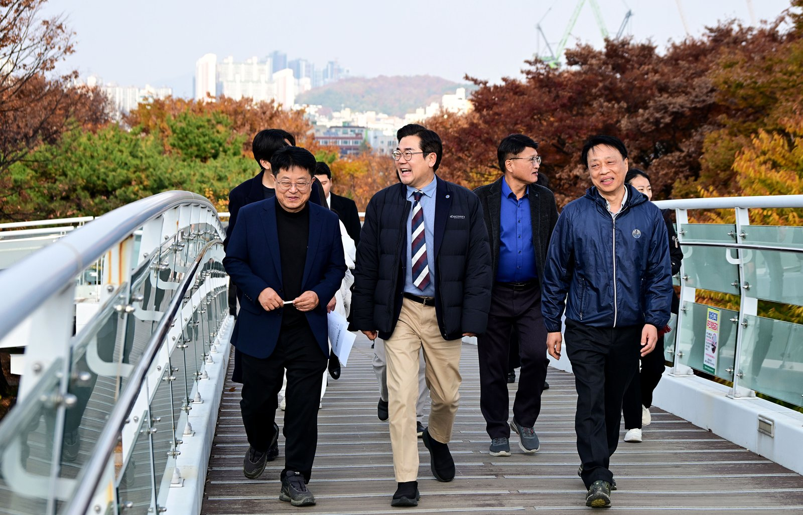

인천 중앙공원~문학 K-컬처파크 잇는 「초록이음길」 구상
보행녹도 435억9000만원 중 민간재원 350억원
AI경제저널=김갑봉 기자 | 인천시(시장 박찬대)가 중앙공원을 출발점으로 도시공간 연결축 「초록이음길」을 만든다고 지난 11일 밝혔다. 중앙공원에서 문화예술회관, 구월동 로데오거리, 문학 K-컬처파크, 구월2지구까지 잇는 구상이다. 도로로 끊긴 중앙공원 지구 사이에는 계단 없는 보행녹도를 놓는다.

공원에서 경기장과 주택지구까지 다섯 거점
시는 이날 중앙공원 활성화 사업 현장을 찾아 추진 상황을 점검했다. 지난 10월 21일 발표한 「인천 도시공간 혁신 비전」의 후속 조치라고 시는 설명했다.
시 구상에서 중앙공원은 녹색 거점이다. 도로로 끊어진 공원 구간을 보행녹도로 이어 주변 지역에서 공원으로 드나들기 쉽게 한다.
문화예술회관은 공연·전시를 엮은 문화 거점으로 삼는다. 구월동 로데오거리는 보행동선과 상권 연결을 강화해 방문객의 발길을 상권으로 잇는다.
문학경기장 일대에는 공연과 e스포츠, 드라마·웹툰·캐릭터 같은 K-콘텐츠를 만들고 즐기는 문학 K-컬처파크를 둔다. 구월2지구는 공공주택사업과 엮어 K-콘텐츠 일자리 가까이 사는 생활권으로 만든다는 구상이다.
박찬대 인천시장은 "중앙공원은 단순한 휴식 공간을 넘어 인천의 문화와 상업, 주거를 유기적으로 잇는 핵심 도시 축으로 거듭날 것"이라고 말했다.
중앙공원 보행녹도의 돈과 일정
중앙공원은 2005년 조성한 띠 모양 공원이다. 미추홀구 관교동에서 남동구 간석동까지 길이 3.9㎞, 폭 100m이고 지구 9개로 나뉘어 있다.
시는 지구 사이를 계단 없는 보행녹도 5곳으로 잇는다. 1단계로 2018~2020년 3·4지구를 잇는 월운교와 4·5지구를 잇는 가온교를 놓았다.
2~3지구를 잇는 보행녹도는 지난 5월 13일 착공했다. 사업비 43억원, 폭 3.5m, 총연장 111m이고 공사 기간은 12개월이다. 시는 2027년 2·3단계, 2028년 4단계를 마친다는 계획이다.
총사업비는 435억9000만원이다. 이 가운데 350억원(80.3%, AI경제저널 계산)이 민간재원이고 시비는 85억9000만원이다. 인천터미널 용지 복합시설 개발로 확보한 100억원은 1~2지구에 쓴다. 구월동 1455번지 개발로 확보한 250억원은 5~8지구에 쓴다.
「초록이음길」이 주민과 상인에게 말하는 것
시 자료에서 짚을 것은 세 가지다.
돈과 일정이 나온 것은 중앙공원 활성화 사업뿐이다. 「초록이음길」 전체의 사업비와 완공 시점은 11일 발표에 없다. 민간재원으로 하는 3·4단계는 절차가 남았다. 도시관리계획 변경 결정과 도시공원위원회 심의, 실시설계를 거쳐 착공한다고 시는 지난 9월 밝혔다.
시는 2022년 4월 중앙공원에 보행육교 7곳을 짓는다고 밝혔다. 지난 9월 계획의 무장애 보행녹도는 5곳이다. 시가 2020년 7월 한 주민 만족도 조사에서는 98% 이상이 매우 만족한다고 답했다. 추가 설치가 필요하다는 답은 94% 이상이었다.
시는 2010년 중앙공원 연결육교 설치 타당성 조사와 기본설계 용역을 했다. 이 용역에서 환경·교통·조경 전문가는 녹지축 연결을 위해 지구 간 연결 육교가 필요하다는 의견을 냈다.
같은 해 서울시립대 조경학과 노태환·한봉호는 한국환경생태학회 학술대회 논문을 냈다. 이들은 중앙공원이 남북 도로 7개와 동서 도로 3개에 끊겨 지구 9개로 나뉘었다고 분석했다. 연구진은 공원 북측과 남측 녹지축이 이어지지 않아 조류의 서식·이동 통로로서 녹지축 기능이 부족하다고 봤다.
문학 K-컬처파크는 공모 단계다. 시는 지난 10월 21일 비전 발표에서 관련 국가 공모사업에 참여할 계획이라고 밝혔다. 시는 다섯 거점을 잇는 세부 추진계획을 짜고 주민과 전문가 의견을 듣는다고 밝혔다.
참고문헌
- "중앙공원에서 문학 K-컬처파크까지...인천의 새로운 도시 연결축 만든다", 인천광역시 문학혁신과, 2026.11.11, https://www.incheon.go.kr/IC010205/view?repSeq=DOM_0000000015947795
- "인천시, 중앙공원 단절된 공간 잇는다. 2028년까지 활성화 사업 추진", 인천광역시 공원조성과, 2026.09.17, https://www.incheon.go.kr/IC010205/view?repSeq=DOM_0000000015559061
- "인천시, 중앙공원 2~3지구 잇는 보행녹도 13일 착공", 인천광역시 인천대공원사업소, 2026.05.12, https://www.incheon.go.kr/IC010205/view?repSeq=DOM_0000000014685432
- "「인천 도시공간 혁신 비전」 발표... "거쳐 가는 도시에서 머무는 도시로"", 인천광역시 제물포혁신과, 2026.10.21, https://www.incheon.go.kr/IC010205/view?repSeq=DOM_0000000015798390
- "인천 '중앙공원' 보행육교 확대된다", 인천광역시 공원조성과, 2022.04.19, https://www.incheon.go.kr/IC010205/view?repSeq=DOM_0000000004579129
- "인천중앙공원 보행육교의 새 이름 공개", 인천광역시 공원조성과, 2022.08.08, https://www.incheon.go.kr/IC010205/view?repSeq=DOM_0000000005293626
- "도심 녹지축 기능 향상을 위한 식재설계기법 연구 - 인천 중앙공원을 대상으로 -", 노태환·한봉호(서울시립대 조경학과), 「한국환경생태학회 학술대회논문집」 2010.04a 232~236쪽, 2010.04.16, https://koreascience.kr/article/CFKO201035738821185.page
[사진 출처]
- [사진1] 인천시 인천인터넷방송 포토시정 「중앙공원 활성화 사업 현장방문」(2026.11.11) https://www.incheon.go.kr/intv/TV010201/3094456
관련기사
- 2028년 G20 정상회의, 인천·한국·동북아에 걸린 것
- 백령공항 타당성재조사 통과, 총사업비 3913억원에 2033년 개항 전망
- 청라연장선 지연 대책 중간 결과, 전동차 임차와 버스 증차
- 청라연장선 시공사 경영진 간담회, 발표에 없는 새 개통 시점
저작권자 © AI경제저널 무단전재 및 재배포, AI학습 및 활용 금지